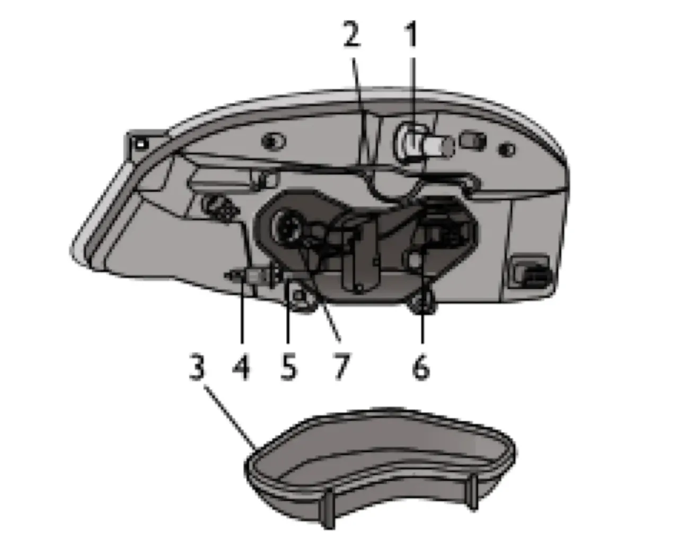
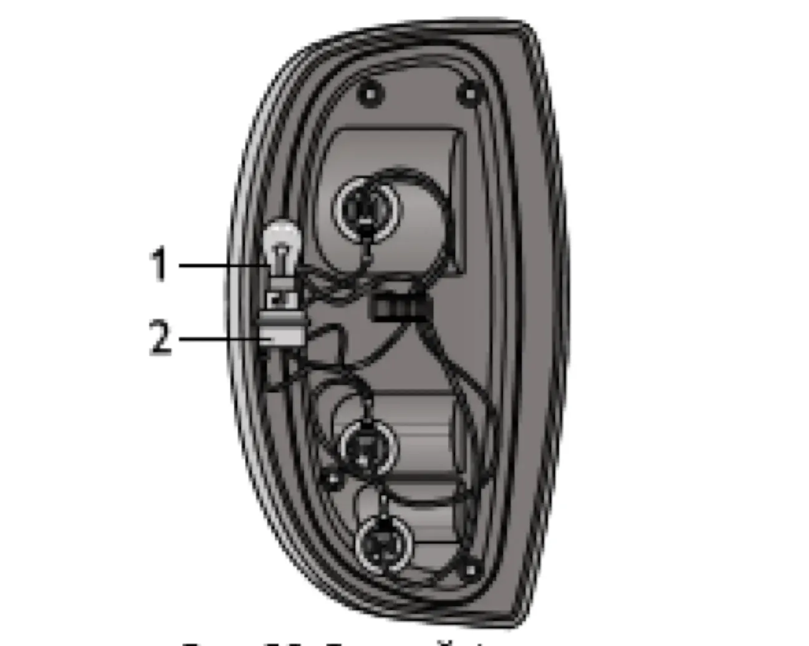
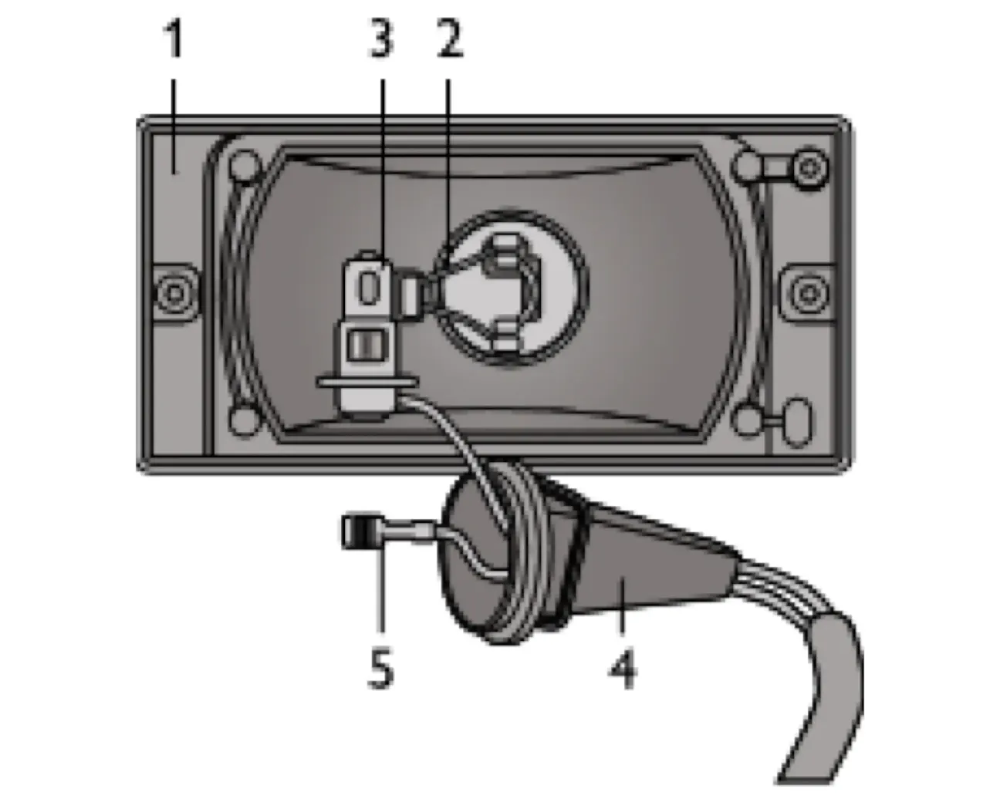
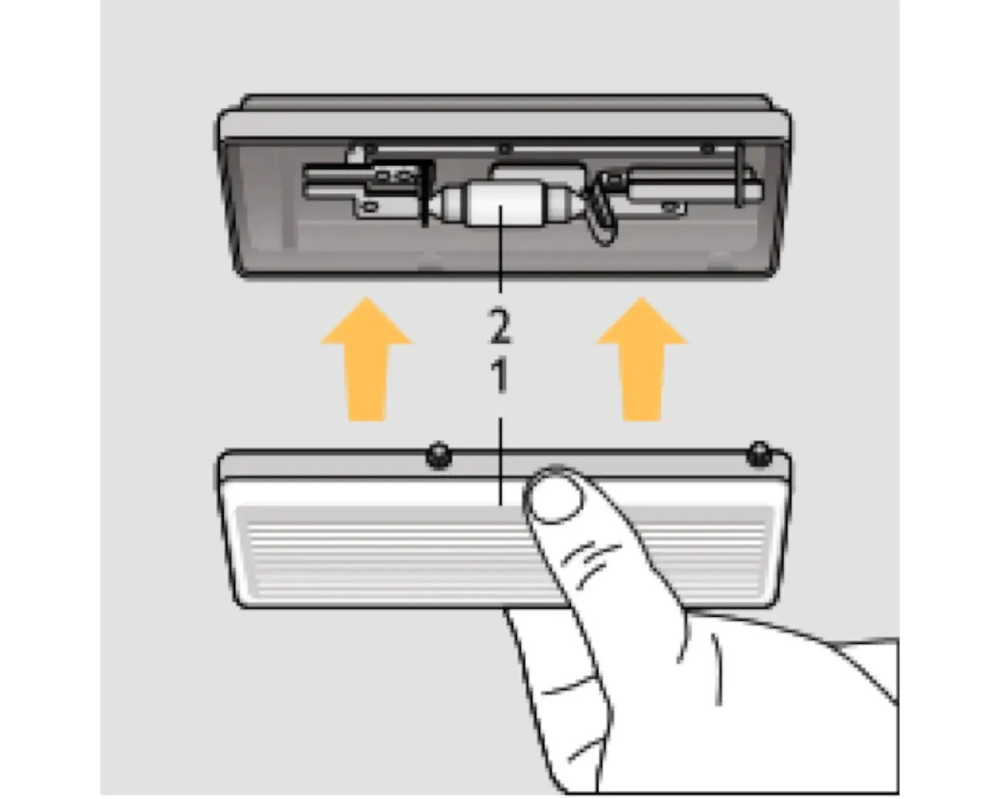
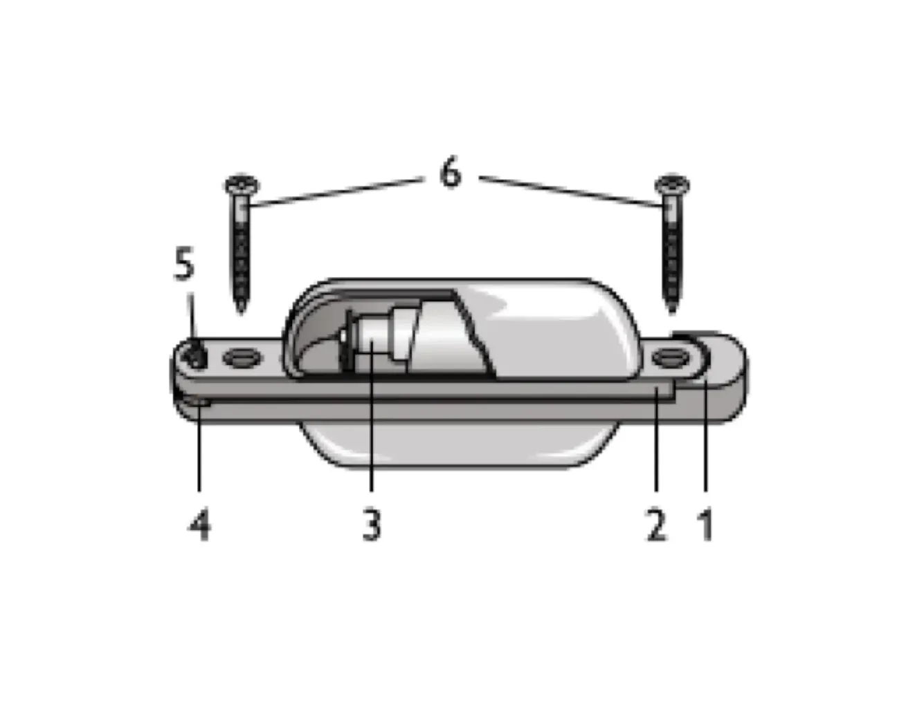
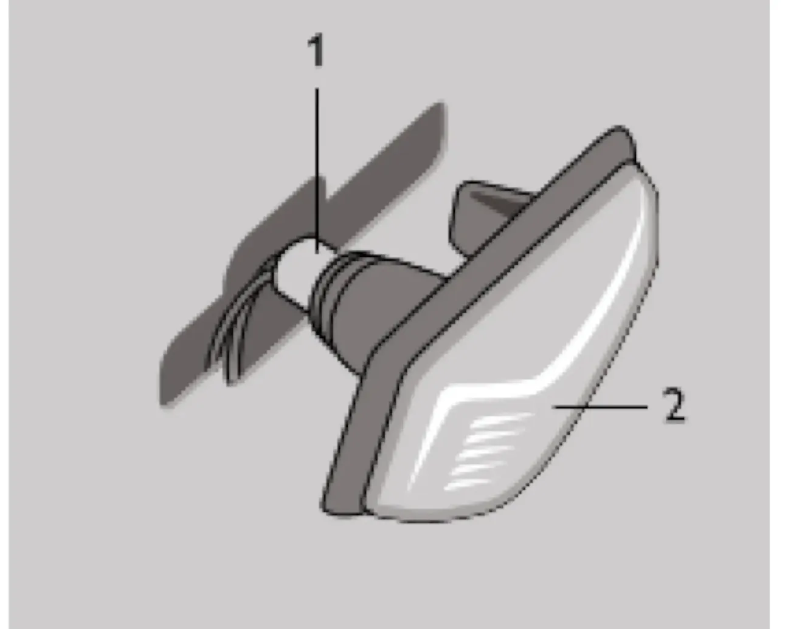
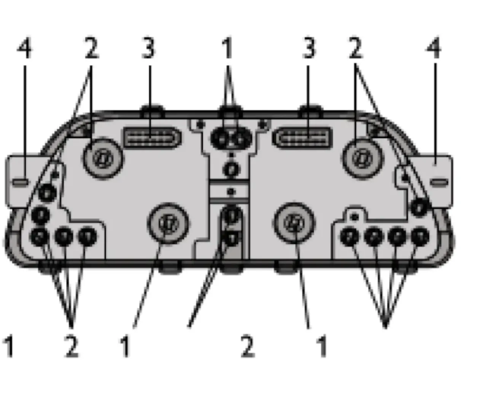

Замена ламп
Для нормальной работы системы освещения и сигнализации применяйте лампы, указанные в приложении 2.

Перед заменой ламп в блок-фаре снимите защитную крышку, которая фиксируется проволочным держателем. Для замены лампы ближнего или дальнего света снимите колодку, выведите из пазов усики пружинной защёлки и извлеките лампу. Чтобы заменить лампу указателя поворота, поверните патрон против часовой стрелки и выньте его из гнезда, поверните и извлеките лампу. Для замены лампы габаритного света необходимо демонтировать колодку ближнего света фар, вытянуть патрон с лампой из блок-фары, извлечь лампу.

Замену ламп в заднем фонаре проводите со стороны багажного отделения, предварительно открыв клапан в обивке боковины багажного отделения. Для доступа к перегоревшей лампе поверните патрон против часовой стрелки и выньте его в сборе с лампой. Чтобы вынуть лампу из патрона, нажмите на лампу и поверните её против часовой стрелки.

В противотуманной фаре перегоревшую лампу меняйте, предварительно сняв фару с автомобиля. Чтобы извлечь лампу, снимите защитный резиновый кожух и выведите из пазов усики пружинной защёлки. Для удобства демонтажа лампы предварительно снимите с неё колодку.

В плафоне освещения салона перегоревшую лампу меняйте, сняв рассеиватель, для чего нажмите пальцами по центру рассеивателя и потяните его вниз. Лампа удерживается в плафоне пружинными контактами.

Перегоревшую лампу в фонаре освещения номерного знака меняйте только после его снятия с автомобиля. Лампа в корпусе удерживается пружинными контактами.

Для замены лампы в боковом указателе поворотов снимите его с автомобиля. В гнезде указатель удерживается пружинными фиксаторами. Затем снимите защитный резиновый колпачок, выньте патрон в сборе с лампой из корпуса и извлеките лампу.

Для замены контрольных ламп и ламп освещения в комбинации приборов снимите щиток и отверните винты крепления. Затем потяните комбинацию приборов на себя и отсоедините жгуты проводов от колодок. Лампу, подлежащую замене, поверните против часовой стрелки и выньте из гнезда.